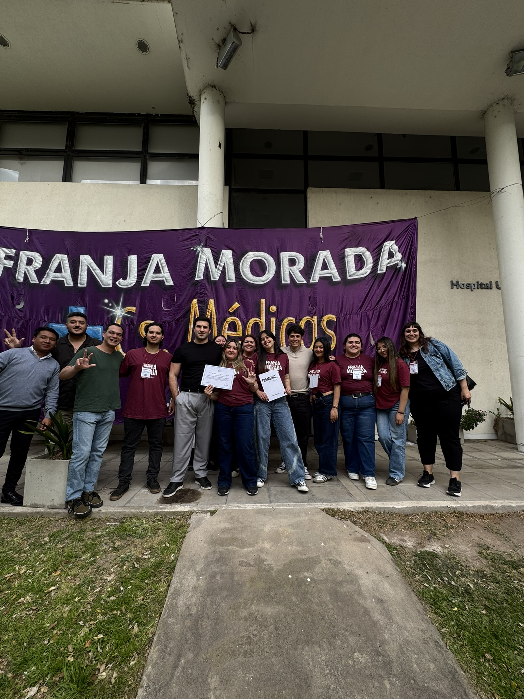

Desde Franja Morada Ciencias Médicas llevamos adelante la primera edición de FRAMEDIC, una iniciativa que nació de los propios estudiantes y que busca acercarnos a distintas experiencias profesionales mientras transitamos nuestra formación.
Creemos que formarnos para cuidar a otros requiere conocimiento científico, pero también aprender a trabajar con profesionales de distintas disciplinas, escuchar sus experiencias y comprender las realidades que vamos a encontrar en hospitales, laboratorios y centros de salud. Por eso generamos esta jornada: para vincular lo que aprendemos en las aulas con la experiencia de quienes trabajan todos los días en el sistema de salud.
Durante la jornada contamos con la participación de Dr. Diego Echazarreta, Dr. Pedro Quieto, Lic. Juana Jiménez, Dr. Jorge Orellana, Dra. Gabriela Escudero y Méd. Luciana Campagnolo, entre otros disertantes que se sumaron a este espacio para compartir sus conocimientos, experiencias y miradas sobre el ejercicio profesional.
Queremos agradecer especialmente a cada uno de los disertantes que nos acompañaron y a todos los estudiantes que participaron y fueron parte de esta primera edición. Para nosotros, generar estos espacios de encuentro y formación también es una manera de construir la Facultad que soñamos.
Además, tenemos la alegría de que FRAMEDIC fue reconocido como de Interés Municipal por la Municipalidad de La Plata. Este reconocimiento representa un impulso para seguir pensando y llevando adelante nuevas actividades desde y para los estudiantes.

Desde Franja Morada vamos a seguir impulsando este tipo de actividades. Defender este tipo de actividades es defender la Universidad Pública.